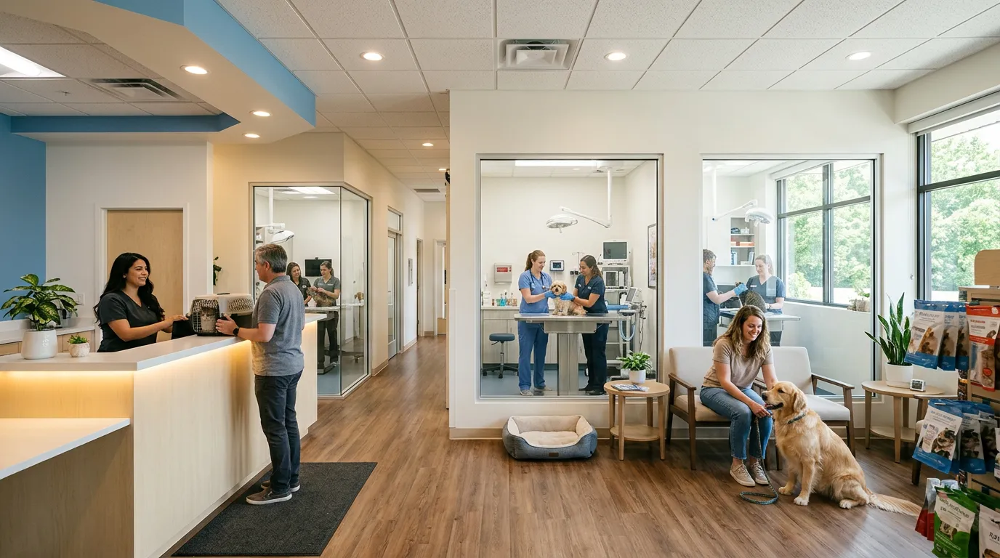
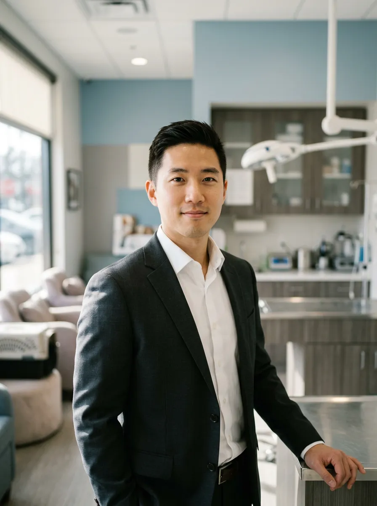
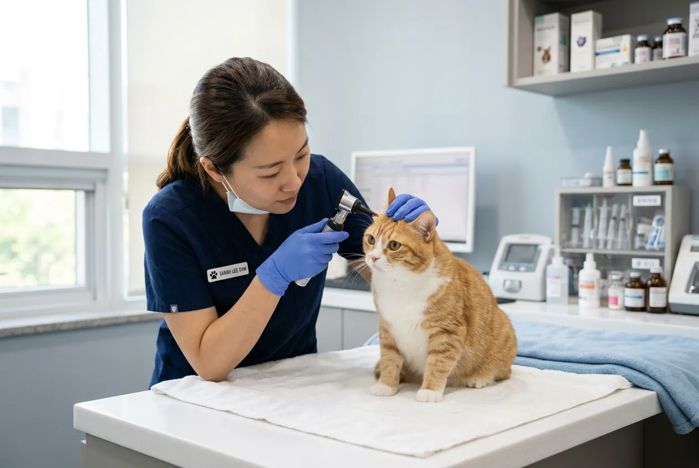
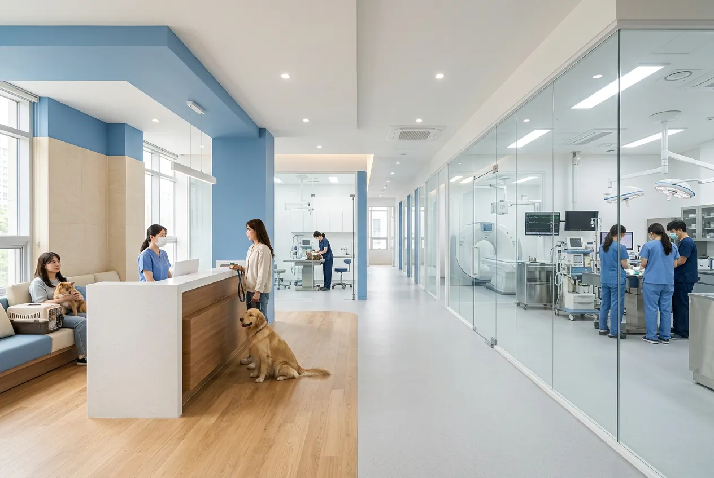
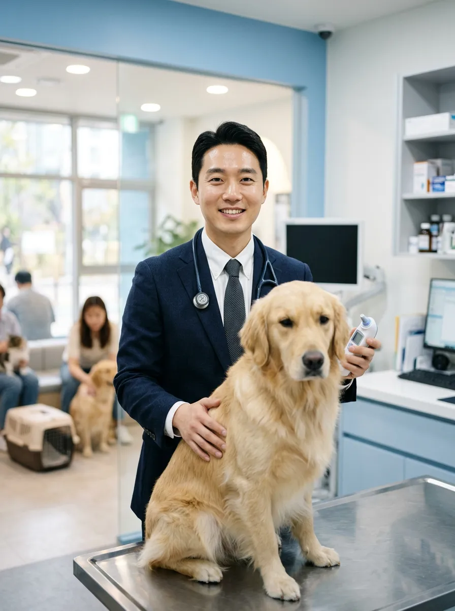
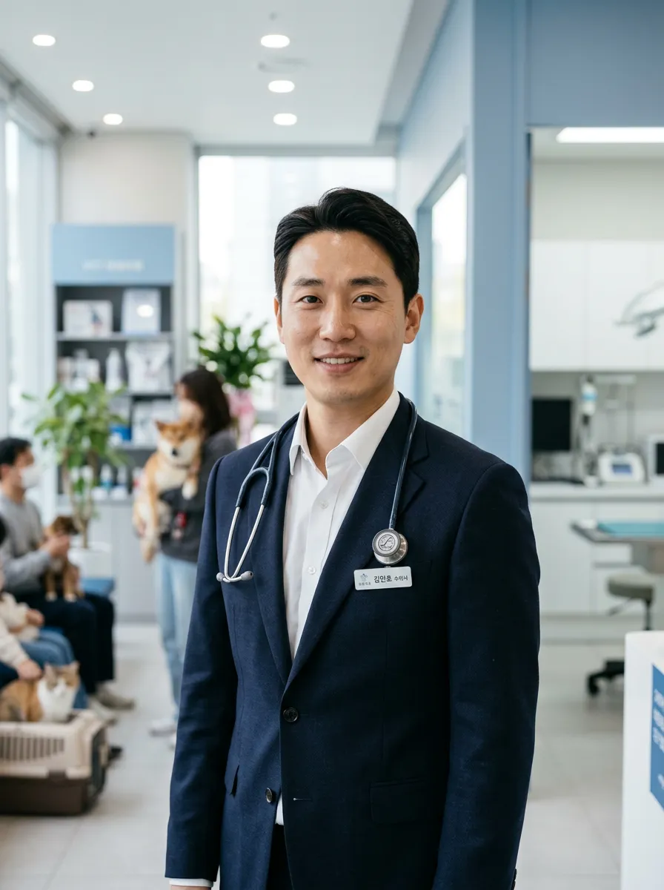
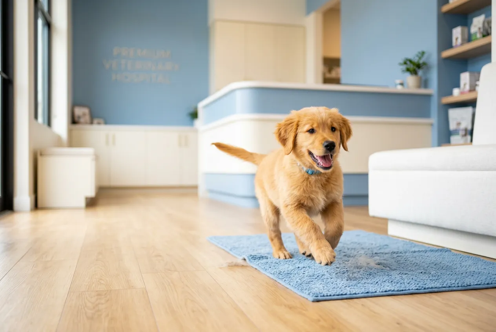
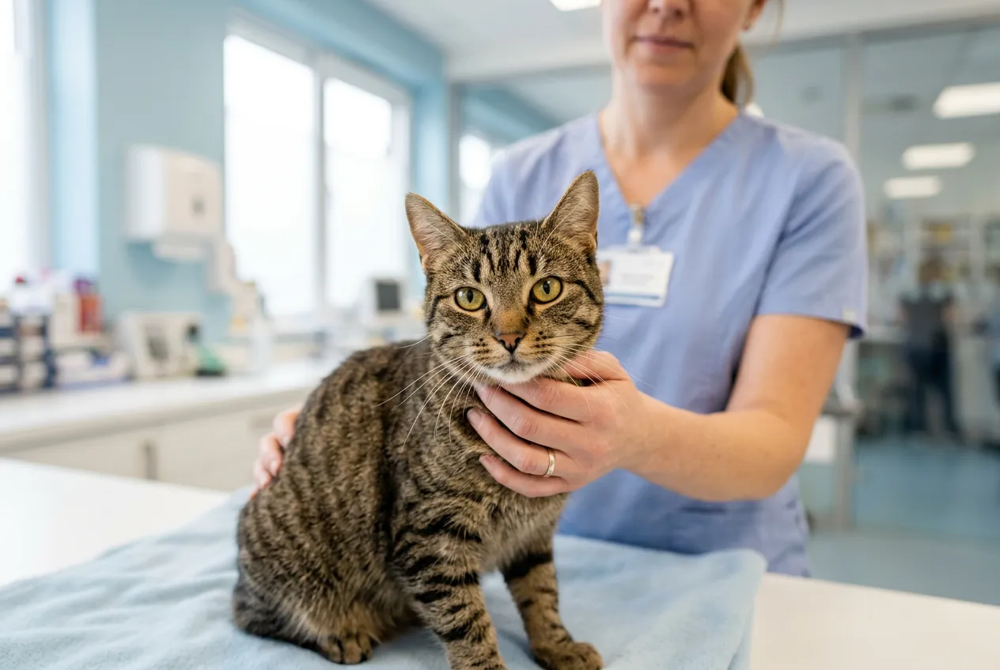
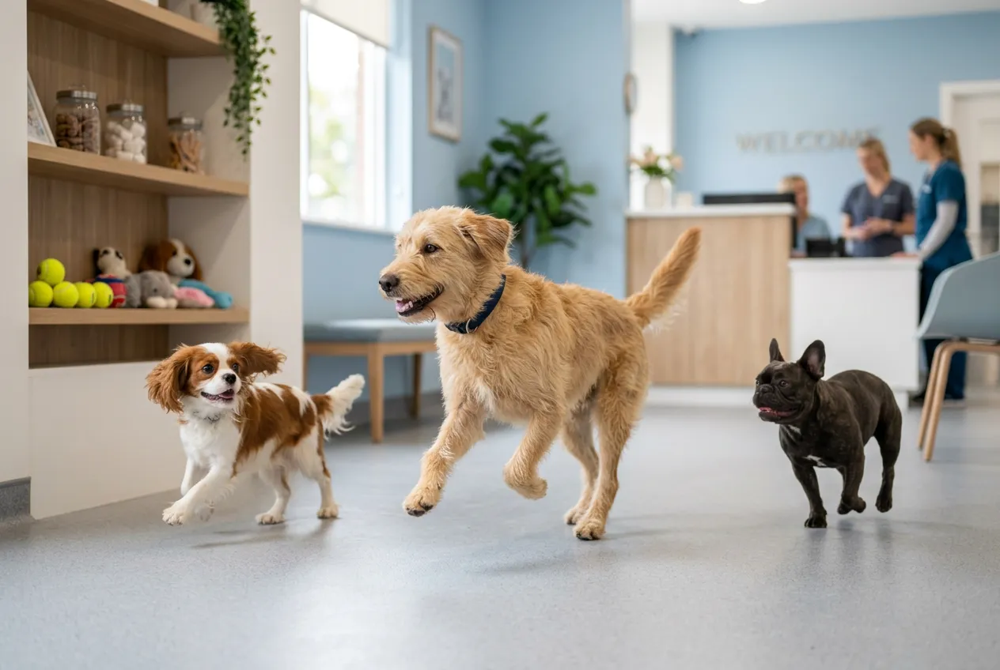
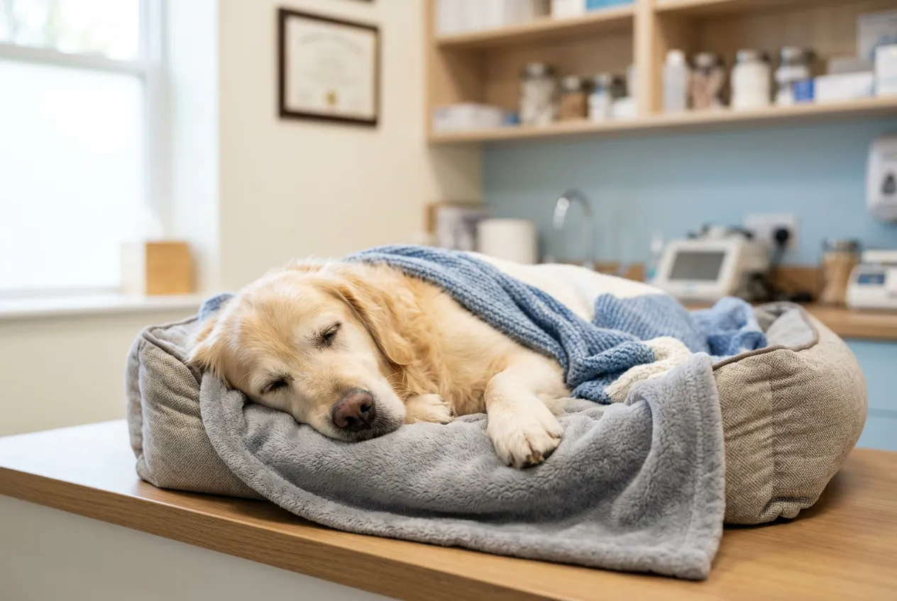

Patient Journey
처음부터 끝까지,
한결같은 케어
예약부터 퇴원 후 관리까지 체계적인 진료 프로세스로
보호자님과 반려동물 모두 안심할 수 있습니다.
온라인 예약
전화 또는 온라인으로 간편하게
원하는 시간에 예약합니다.
초진 상담
반려동물의 이력과 증상을
상세히 파악합니다.
정밀 진단
CT/MRI, 혈액검사 등
첨단 장비로 정확히 진단합니다.
치료 & 사후관리
맞춤 치료 후 퇴원까지
보호자님께 경과를 공유합니다.
온라인 예약
전화 또는 온라인으로 간편하게 원하는 시간에 예약합니다.
초진 상담
반려동물의 이력과 증상을 상세히 파악합니다.
정밀 진단
CT/MRI, 혈액검사 등 첨단 장비로 정확히 진단합니다.
치료 & 사후관리
맞춤 치료 후 퇴원까지 보호자님께 경과를 공유합니다.
Departments
전문 진료과목
6개 전문 진료과목별 보드인증 수의사가
세분화된 진료를 제공합니다.
내과
심장, 호흡기, 소화기, 내분비 질환 전문 진료. 정밀 혈액검사와 초음파 기반 정확한 진단.

외과
정형외과, 신경외과, 연부조직 수술.
최소침습 수술로 빠른 회복.
치과
스케일링, 발치, 치주 치료 전문.

피부과
알러지, 아토피, 피부 감염 치료
응급 / ICU
365일 24시간 응급 진료 체계. 중환자실(ICU) 상시 운영, 실시간 모니터링.
건강검진
연령별 맞춤 건강검진 패키지. 조기 발견이 최선의 치료입니다.

State-of-the-Art Facility
의료 기술에 대한
타협 없는 투자
독일 Siemens CT, 일본 Hitachi MRI, 미국 IDEXX 혈액분석 장비를 갖추고 있습니다. 인의(人醫) 수준의 장비로 정확한 진단을 약속합니다.
CT · MRI
정밀 영상 진단
ICU
24시간 중환자 모니터링
Lab
원내 즉시 검사
Medical Team
믿을 수 있는 전문 의료진
벳시그니처의 모든 진료는 각 분야 보드인증 전문의가 직접 담당합니다. 내과, 외과, 치과, 피부과, 응급의학과 등 세분화된 전문 진료 체계를 갖추고 있습니다.
김도현 원장 DVM, PhD
내과 전문 · 심장/호흡기
서울대 수의학 박사 · 前 건국대 수의과 교수
이수진 부원장 DVM, MS
외과 전문 · 정형외과/신경외과
UC Davis 외과 펠로우 · ACVS 인증
박민재 진료수의사 DVM
피부과/치과 전문
일본 Nihon 대학 피부과 연수 · JAVD 회원

Health Checkup
건강검진 패키지
연령과 건강 상태에 맞는 검진 프로그램으로
질병을 조기에 발견합니다.


Premium 검진
₩180,000
전 연령 반려동물을 위한 종합 정밀 건강검진 패키지.
- Basic 전 항목 포함
- 복부 초음파
- 심장 초음파
- 갑상선 호르몬 검사

Senior 검진
₩250,000
7세 이상 시니어 반려동물을 위한 노령 특화 정밀 검진.
- Premium 전 항목 포함
- CT 정밀 촬영
- 관절/척추 정밀 검사
- 종양 표지자 검사

Trust & Certification
보호자님들의 신뢰
"12살 노견 심장 수술 후 ICU에서 24시간 모니터링해주셨습니다. 매일 사진과 함께 경과를 알려주셔서 정말 안심이 됐어요."
김서연 보호자 · 골든리트리버 '코코' 12세
"새벽 3시에 고양이가 호흡곤란이 와서 응급실에 갔는데, 즉시 산소실에 넣어주시고 정확한 진단을 내려주셨습니다. 생명의 은인이에요."
박지훈 보호자 · 페르시안 '눈이' 8세
"건강검진 결과를 표와 그래프로 설명해주시고, 식단과 운동 가이드까지 문서로 받았어요. 이런 디테일은 처음입니다."
최유나 보호자 · 비숑프리제 '몽이' 5세
FAQ
자주 묻는 질문
벳시그니처는 365일 24시간 응급 진료를 운영합니다. 야간(21시~09시)에는 응급전화 02-418-7582로 연락하시면 당직 수의사가 즉시 안내해드립니다. 별도의 야간 진료 할증은 없습니다.
네, 삼성화재, DB손해보험, 현대해상, KB손해보험 등 주요 펫보험사와 제휴되어 있습니다. 진료 시 보험증서를 제시하시면 원내에서 직접 청구 대행이 가능합니다.
강아지는 생후 6주부터 종합백신(DHPPL) 2주 간격 5회, 광견병 3개월 이후 1회 접종합니다. 고양이는 생후 8주부터 종합백신(FVRCP) 3-4주 간격 3회 접종합니다. 이후 매년 추가 접종을 권장합니다.
건물 지하 1-2층에 전용 주차장(40대)이 있으며, 진료 고객은 최대 3시간 무료 주차가 가능합니다. 대형견 동반 시에도 엘리베이터로 편리하게 이동할 수 있습니다.
기존 접종 수첩, 복용 중인 약 목록, 이전 병원의 진료기록(가능한 경우)을 지참해주세요. 온라인 예약 시 사전 문진표를 작성하시면 대기 시간을 줄일 수 있습니다.
